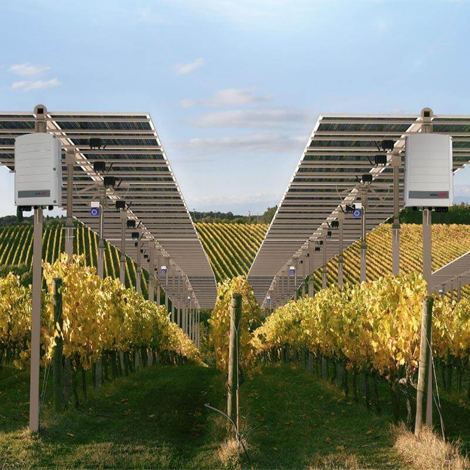

SolarEdge Technologies are a solar technologies company headquartered in Israel. SolarEdge sell a combination of home, industrial and utility-scale solar solutions including modules, batteries, inverters, power optimisers and EV chargers.
SolarEdge technologies' stock - SEDG - has risen 55.45% in 2026 (year-to-date) with a particularly sharp rise in value from 12th March onwards. In this data story, I seek to understand the turbulent story of the SEDG stock and focus on the particular moments when key price swings occurred - to better forecast future events.
SEDG (SolarEdge Technologies) has experienced high volatility since it became publicly listed. There have been frequent price swings and a common indicator for a stock to experience strong buying or selling momentum often occurs when an earnings report is released. Here, I will analyse whether specific earnings reports have led to price swings. This may help to reveal what SolarEdge investors truly care about.
Unlike previous projects, I have now used the report date for SEDG's quarterly financials to determine the change in total revenue over time. SEDG has seen a steady increase for much of its history in reported revenue, however, this must be caveated by a sharp drop reported in late 2023 and early 2024.
I researched the SolarEdge earnings call transcripts using Seeking Alpha from November 2nd 2023 (immediately after the first big drop in revenue, reporting Q3 2023) and the transcript from February 20th 2024 (after the second big drop in revenue, reporting Q4 2023). Zvi Lando (the CEO at the time) stated that 2022 had seen an 'unprecedented surge in demand' for SolarEdge products which he attributed to 'geopolitical' reasons. This potentially aludes to the Russia-Ukraine conflict which began 24th February 2022, leading to wide-scale sanctions on Russian oil and gas exports - potentially causing more countries to invest heavily in solar technology.
On the subject of falling revenues in Q3 2023, Lando stated that market demand 'began to slow' due to distributors facing financial challenges - leading to cancellations and push out ourders. In response to the initial high demand (SolarEdge saw record level shipments in Q1-Q2 of 2023), SolarEdge had built infrastructure to support anticipated sales growth - however this created a 'burden' on near-term margins. Lando pointed to changes in different governmental policies across Europe negatively impacting SolarEdge, whilst the US and rest of the world saw no 'significant change' and were 'relatively stable' respectively. This demonstrates that the 29% quarter on quarter decline in European solar revenues was potentially the most important factor.
Lando also addressed the 'ongoing situation in Israel' - implicating the October 7th attacks from Hamas (an Iranian proxy militia) on Israel and - by extension - the Israeli government's subsequent military response. Although he stated that the conflict had 'no disruption' on manufacturing and product delivery, 11% of the Israel-based workforce (6% of the global workforce) had been called up for reserve military duty.
Lando mentioned that inventory levels across Europe were still elevated, due to lower sell-through (Units Sold / Inventory + Units Received). Interestingly, Lando mentioned that SolarEdge usually see a 'seasonal decline' - alluding to the onset of Winter. However, this was 'more pronounced' in late 2023 due to the 'early onset of winter', hinting potentially that climate-change itself may disrupt demand for solar technology. Again, to justify falling revenue, Lando alluded to the relatively unchanged dynamics in the US and rest of the world compared to Europe.
I determined significant market price swings following earnings calls (p < 0.05) at 10 day time series following the earnings call. Using these significant price swings, I created linear models and scaled their slope coefficients using a sin() transformation. For each significant price swing, I then plotted the log scaled change in total revenue from the previous quarter.
As the scatter plot above demonstrates, there appears to be no distinct link between news sentiment and actual price movements. For my detection of news sentiment, I used the alpha vantage detected sentiment for each news article on FTC Solar for 2 years before the present day. I then plotted the subsequent time-series correlation coefficient of the FTC Solar stock price for a 24 hr window of trading following the news being released. Evidently, the alpha vantage detected sentiment of a news article is not a suitable indicator for potential price movements.
Gross Profit = Revenue - Cost Of Goods Sold (COGS)
This graph demonstrates that FTC Solar's fundamentals have recently displayed profitability - despite recording historical losses across multiple years. It is crucial to understand that these stock prices reported occurred despite investors being unaware of the quarterly financial reports (which only release 3 months later). Therefore, there is a lag between performance and market reaction. Confusingly, when these recent results were revealed in their most recent Q4 financial report for December 2025, this was met by a sharp drop in the stock price - despite the last two quarterly reports displaying profitability for the first time since 2023.
However, gross profit only indicates core profitability and this does not factor in taxes and interest. When these are considered, they reveal how much money is left for investors and re-investment. This perhaps may make for a more realistic comparison metric.
Evidently, further research is certainly required on FTC Solar - specifically regarding its underlying fundamental liabilities and specifically why they have increased recently. By better understanding these liabilities, we can gain a better estimation for the book value of FTC Solar since for most of its time since being a public company it had been undervalued. However, it has also struggled to demonstrate profitability with its core business model until recently - the next quarterly results will be very important to determine whether FTC Solar's new leadership are able to make the company consistently profitable across multiple quarters. Ultimately, in the long-term, the FTC Solar stock appears to be undervalued since the coming wave of solar investment and solar projects seem set to dramatically increase demand for its solar tracking technology.
Following this case-study on FTC Solar, it's become clear that a company's fundamentals can strongly impact a stock's value - alongside news articles (although this is difficult to forecast). In the case of FTC Solar, I need to further examine how the stock price responds to the release of news for the previous quarter's results - and whether the important metrics vary over time.
Coming up next, I want to return to the main green portfolio project - but this time bringing a deeper focus on the impact of quarterly fundamental news.
Full data has been obtained by alphavantage using my own custom GUI for climate stock data extraction - full source code can be obtained on github here